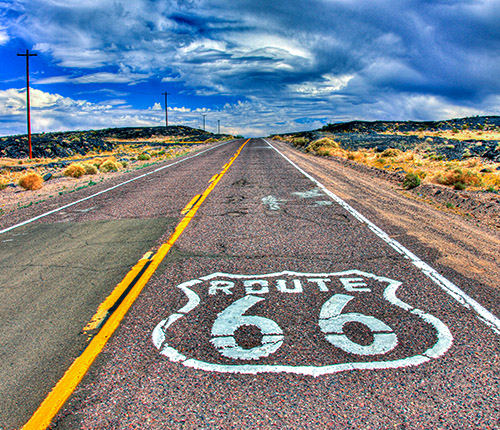
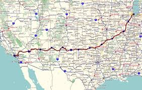

Legends Never Die Tour
Posted on Mon 25 May 2026 in Rides

Legends Never Die Tour
Dates: May 25 – June 3, 2026
Route: Chicago → Santa Monica, California
Road: The full length of historic Route 66
Ride Type: Open — join for a day or the whole run
The Ride of a Lifetime
This is it.
The big one.
The kind of ride you daydream about when you’re stuck at a red light on a Tuesday.
A cross-country tribute celebrating three massive milestones:
- 100 years of Route 66
- 125 years of Indian Motorcycle
- 200 years of the United States of America
Three anniversaries.
One legendary road.
And a motorcycle community ready to make history together.
I’m not one of the organizers — I’m one of the riders.
This is a bucket-list run for me, plain and simple.
And I’m not going alone. I’m taking this trip with friends, old and new, and with every rider who decides to roll along for a mile, a state, or the full damn thing.

What This Ride Represents
If you ride, you already know this:
Some people chase miles.
We chase moments.
Moments that hit you in the chest.
Moments that remind you exactly why you threw a leg over a bike in the first place.
Moments where you look around at the people you’re riding with and think:
“Yeah. These are my people.”
The Legends Never Die Tour is a rolling celebration of the motorcycle community itself.
It’s not just about the pavement rolling under your tires —
it’s about the riders rolling beside you.
- Conversations at gas stations that turn into friendships
- Swapping stories over diner coffee at 6 a.m.
- Standing in a motel parking lot at midnight, staring at the sky with helmet hair and a full heart
This ride is for everyone.
Every background. Every level.
If you can keep it upright and respect the group, you’re welcome.
The Journey: Chicago to Santa Monica
Official logistics, support details, and registration come from the organizing team —
but the spirit of the ride is simple:
Follow the Mother Road from its beginning to its end.
Starting Point: Chicago
We kick off in Chicago, Illinois — classic starting point of Route 66.
- The “Begin” sign
- The city energy
- Bikes gathering from all over, lining up for the first miles west
From there, we roll out of the city and into the story.
Ending Point: Santa Monica, California
We finish at the iconic Santa Monica Pier —
the symbolic “End of the Trail.”
You’ve seen the photos.
You’ve seen the sign.
Standing there with road grit on your boots and your bike cooling behind you?
That’s different. That’s real.
States Along the Way
The full historic Route 66 alignment carries us through:
- Illinois
- Missouri
- Kansas
- Oklahoma
- Texas
- New Mexico
- Arizona
- California
It’s a slow-motion time machine — neon, diners, two-lane blacktop, forgotten towns, desert skies, mountain silhouettes, and endless “Man, I can’t believe I’m actually here” moments.

Highlights & Landmark Stops
The exact schedule and daily breakdown belong to the official organizers, but rides like this always hit:
- Historic Route 66 landmarks
- Local motorcycle dealerships and hangouts
- Classic diners and mom-and-pop restaurants
- Old motels with a thousand stories baked into the walls
- Route 66 museums and roadside attractions
- Desert stretches where the horizon feels a hundred miles wide
Every stop is a chance to fuel the bike, refill your tank, and connect with someone who gets it.
What This Ride Feels Like
This isn’t just a route. It’s a feeling.
- Camaraderie – you’re surrounded by people who love this as much as you do
- Deep reflection – long stretches of road where it’s just you, the bike, and your thoughts
- Social connections – parking-lot laughs, hotel beers, and “See you down the road” goodbyes
- Bucket-list achievement – you rode the whole damn Mother Road
- Scenic overload – desert sunsets, midwestern skies, neon at night
- Pushing beyond comfort – long days, different beds, new places, new faces
- Flow-state riding – nothing exists except the next curve and the next mile
- Sunrise and sunset landmarks – the road looks different at golden hour, and you were there to see it
- Feeling like a character in a movie – because honestly, that’s what this ride is
- Something spiritual – there’s a reason so many riders come back from big trips like this a little different

Why I’m Riding
For me, this isn’t just another event on the calendar —
it’s a personal milestone.
Riding the full length of Route 66 has been on my list for a long time.
And after getting knocked off the bike and sidelined by an accident, rides like this hit a little deeper.
This tour is a reminder that:
- We don’t control how much time we get.
- But we do control how we use the miles we have.
So I’m using these miles to ride something legendary.
To be surrounded by the motorcycle community I love.
To meet people I haven’t met yet, but somehow already know.
This is about honoring the past, riding the present, and leaving the road a little better than we found it.
Whole Run or Just a Slice
One of the best parts of the Legends Never Die Tour?
You don’t have to do the whole thing to be part of it.
- Ride a single state
- Jump in for a couple of days
- Meet up at a key landmark
- Or commit to the full Chicago-to-Santa-Monica run
You show up for the miles you can.
You’re still part of the story.
Want to Join the Legends Never Die Tour?
🏍️ Join the Legends Never Die Tour
I’m not the official organizer, but if you’re thinking about running all or part of this tour and want help getting your head, bike, or packing list ready, reach out. I’m always down to talk Route 66, big rides, and the kind of trips you remember for the rest of your life.